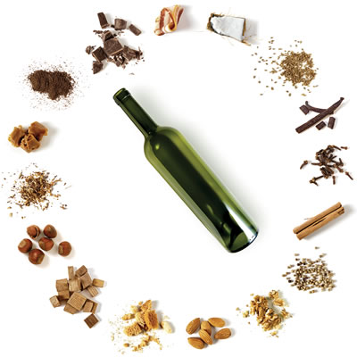
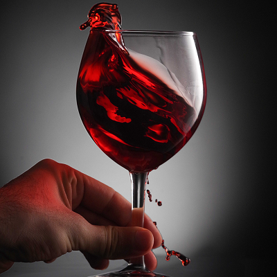
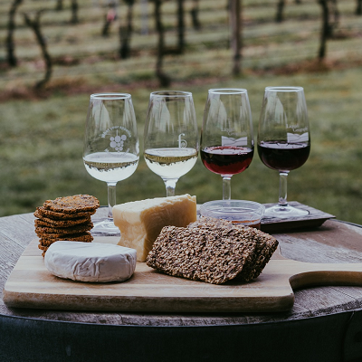
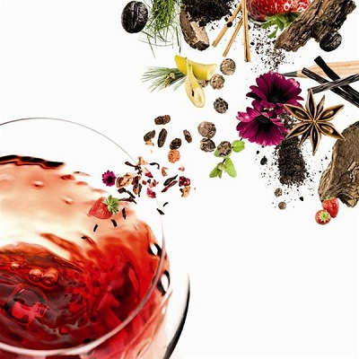

Los aromas del vino. Prov. San Juan 20/12/21

Antocianos y oxidantes del vino - Prov. Mendoza 06/01/22

Degustación de quesos y vinos - Prov. Buenos Aires 30/03/22

Fin de un mito: blancos para el invierno - Prov. San Luis 15/04/22